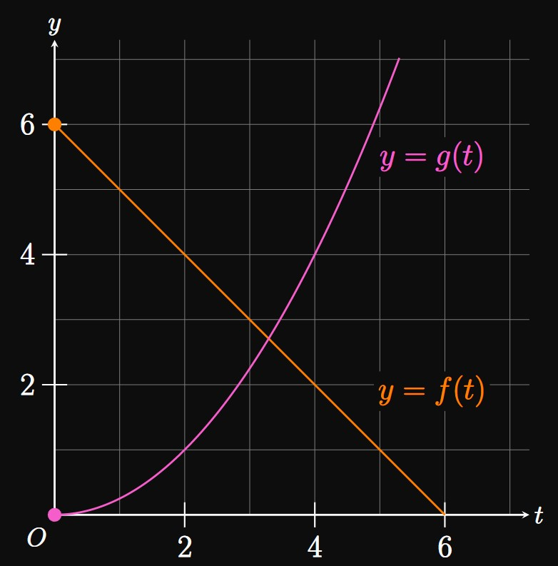
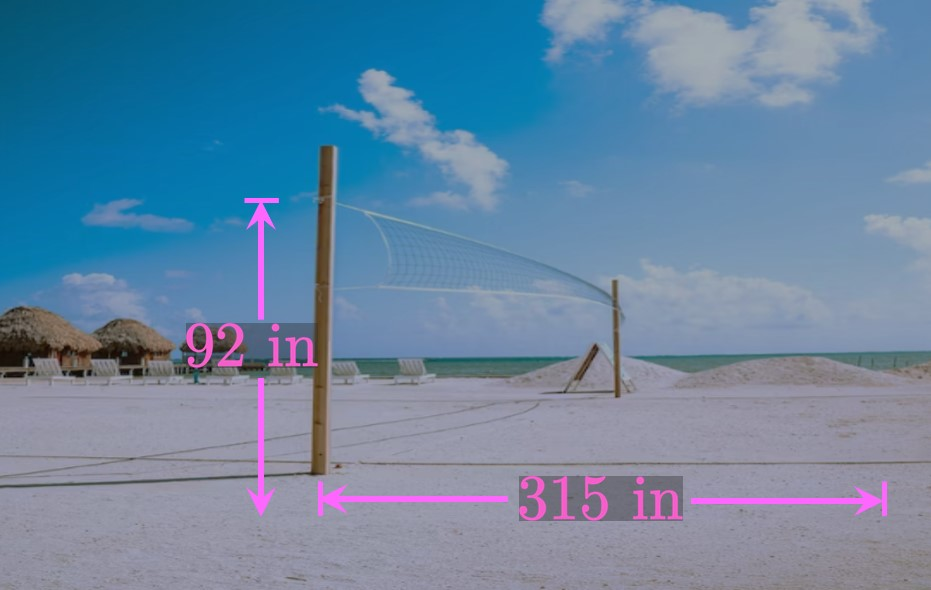

A curve is parameterized by \(x = f(t)\) and \(y = g(t),\)
where the range of \(f\) is \([2, 5]\) and the range of \(g\) is \([0, 2].\)
What is true about the curve?
A graph given by the parametric equations
\[x = at - 2 \lspace y = bt + 6\]
passes through the point \((2, 3)\)
when \(t = 2.\)
Calculate \(a\) and \(b.\)

A curve \(C\) is parameterized by \(x = f(t)\) and \(y = g(t)\)
for \(0 \leq t \leq 6.\)
Figure 15
shows the graphs of \(f(t)\) and \(g(t),\)
where \(f\) is linear and \(g\) is a quadratic.
Find the identity of \(f(t).\)
Find the identity of \(g(t).\)
By eliminating the parameter, represent \(C\)
using a Cartesian equation.
Sketch the curve \(C.\)
Draw arrows to indicate the direction
in which \(C\) is traced as \(t\) increases from \(0.\)
The graph of the trigonometric function
\(y = \sin x \cos x\)
can be parameterized by the equations
\[x = f(\theta) \lspace y = \tfrac{1}{2} \sin \theta \pd\]
Use the double-angle identity for sine to find
\(f(\theta).\)
Let \(f\) be an invertible function.
Suppose that the graph of \(y = e^{f(x)}\)
is represented by the parametric equations
\(x = g(t)\) and \(y = e^t.\)
What is the relationship between \(f\) and \(g \ques\)
Let \(t\) be a parameter.
Write a set of parametric equations for the hyperbola
\[\frac{x^2}{a^2} - \frac{y^2}{b^2} = 1\]
by comparing this equation to the identity \(\sec^2 t - \tan^2 t = 1.\)
Let \(m,\) \(n,\) and \(k\) be real numbers.
For \(t \gt 0,\) consider the curve \(C\) parameterized by the equations \(x = t^n\)
and \(y = kt^m.\)
Show that \(C\) can be modeled by the equation \(y = f(x),\)
where \(f\) is a rational function of degree \(m/n.\)
A particle moves along a circle of radius \(3\) beginning at the point \((3, 0).\)
If the particle begins traveling clockwise and completes one revolution in \(\pi\)
seconds, then find parametric equations describing the particle's path.
Consider a particle moving counterclockwise along a circle of radius \(5\) beginning at the point \((0, 5).\)
The particle completes one revolution in \(4\) seconds.
Determine parametric equations to model the particle's path.
A clock has a minute hand of length \(6\) inches.
Model the coordinates of the tip of the minute hand
as the time changes from \(\clockTime{12}{00}\) to \(\clockTime{1}{00}.\)
A point travels along the ellipse
\(x^2/9 + y^2/4 = 1\)
beginning at the point \((3, 0).\)
The point moves clockwise and traces out the entire ellipse
in \(\pi/2\) minutes.
Find parametric equations to describe the point's motion.
Consider the ellipse
\(x^2/36 + y^2/25 = 1.\)
Write parametric equations such that
the ellipse is traced out counterclockwise once over \(0 \leq t \leq \pi/4\)
and such that
\((x, y)\) \(= (0, -5)\) when \(t = 0.\)
A car drives clockwise with constant speed along a circular road of diameter \(200\) feet.
The car begins at the northernmost point of the road,
and in one minute the car travels a distance of \(50\) feet.
Write parametric equations to model the car's position from the center of the circle.
On a flat field, a baseball is hit upward from the ground with an initial speed of \(160\) feet per second
at an angle of \(30 \degree\) above the horizontal.
Write parametric equations to describe the baseball's trajectory.
How far does the baseball travel?
Suppose that a \(30\)-foot fence stands \(160\)
feet away from the batter.
Does the ball clear the fence?
A man holding a gun \(2\) meters above the ground
shoots a bullet straight ahead at a speed of \(500\) meters per second.
How far does the bullet travel?
The National Basketball Association (NBA)
requires basketball hoops to be \(10\) feet above the ground.
A \(6\)-foot basketball player attempts to make a three-point shot from the corner
of the court,
which is located \(22\) feet away from the hoop.
The player shoots the basketball straight toward the basket
at an angle of \(41 \degree\) above the ground with a speed of \(30\) feet per second.
Does the player score?

In volleyball, a player serves the ball by hitting it upward
and over the net,
which is about \(92\) inches above the ground and \(315\) inches away from the serving player
(Figure 16).
Suppose that a \(6\)-foot serving player hits the ball at head level straight
toward the net with a speed of \(880\)
inches per second at some angle \(\alpha\)
above the ground.
In terms of \(\alpha,\) write parametric equations for the volleyball's motion.
(Note: \(g\) = \(386\) inches per second squared.)
Model the shape of the ball's trajectory.
Find the values of \(\alpha\) such that the volleyball is successfully served.
On a flat field, a football is kicked upward and lands a distance \(D\)
away. (We call \(D\) the range.)
Find the angle above the horizontal at which the football should be kicked to maximize
the range.
On the roof of a \(20\)-meter building,
a woman kicks a ball up and away from the building with an initial velocity of
\(16\) meters per second
directed \(45 \degree\) above the horizontal.
Calculate the maximum height the ball reaches.